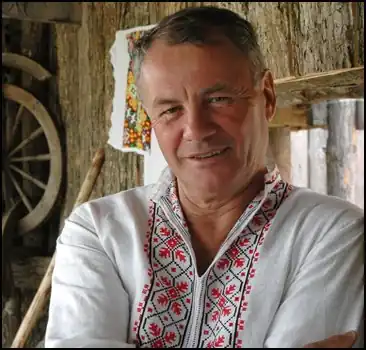

Володимир Яворівський народився 11 жовтня 1942 року в поліському селі Теклівці на Вінниччині в сім'ї колгоспника.
Закінчивши 1964 року філологічний факультет Одеського університету, працював у редакціях газет, на радіо, кіносценаристом, завідувачем відділу прози й заступником редактора журналу "Вітчизна". З весни 1989 полишив літературу і, за власним зізнанням, "весь пішов у політику", ставши депутатом Верховної Ради України.
Першою книжкою В. Яворівського стала повість у новелах "А яблука падають" (1968). Мав рацію Г. Клочек, зауваживши, що В. Яворівський прийшов у літературу без своїх тем, які б зразу виділили його серед інших. Не було цієї теми і в "Яблуках...". Зате привертала увагу метафоричність, образність письма, барокова поетика. Вже тоді критика звернула увагу на "химерність" художнього мислення молодого письменника, яка продовжилася у повісті "З висоти вересня". Здавалося б, уже в перших двох книжках, а особливо в повісті "З висоти вересня" автор знайшов себе, свій стиль, та несподівано зрадив собі і... поплатився за це. На початку 70-х у колишньому глухому, але живописному закутку Полісся — Чорнобилі розгорнулося будівництво "мирної" атомної електростанції. Спокусившися "надсучасною" проблемою, молодий письменник їде на будову, занурюється в "біографію" атома та його творців і пише роман-хроніку "Ланцюгова реакція" (1978). З гіркотою він зізнається згодом, що, мовляв, "якби було хоча б якесь маленьке знаття про те, як примітивно будувалися ті станції, що відбувалося "за кулісами"...". Утім, дуже швидко В. Яворівський знову звертається до вже випробуваного, а головне — органічного для себе способу образотворення і пише "химерний", "умовний" роман "Оглянься з осені" (1979). Роман сюжетно й композиційно доладно скроєний, хоч у творі й немає інтригуючої фабули, карколомних сюжетних поворотів, читабельність роману підтримується самою цікавістю оповіді, інтересом до змальованих тут колоритних особистостей. Наступним твором, який приніс порівняний успіх письменникові, був роман "Автопортрет з уяви" (1981). В центрі його — доля надзвичайно обдарованої української жінки, народної художниці Катерини Білокур, чий унікальний талант високо оцінив Пабло Пікассо. В. Яворівський обрав хоч і давній, проте, здається, найдоцільніший у даному разі шлях — оповідь від першої особи. Хоча неподоланих труднощів у зображенні такої неординарної особистості виявилось чимало. Своєрідним продовженням твору "Оглянься з осені" став роман на попередньому буденному й прозаїчному сільському тлі "А тепер — іди..." (1983) — "химерний роман", як зазначено в журнальному варіанті, і, за словами автора, — твір, з "моментом дива, зміщеннями площини, умовністю". Продовжуючи й розвиваючи тему роману "Оглянься з осені", зокрема, образи тих веселих дядьків, які "наперекір війнам, політичним катаклізмам", "неперспективним" селам і негодам зберегли в собі моральне здоров'я нашого народу, автор прагнув художньо дослідити "хворобу совісті", що роз'їдала душі багатьох, відповісти на болючі питання: "Чому самотні й сумні ці дядьки у старості? Що і кого вони залишають після себе? Де і коли допустились помилки, що не мають на кого залишити те, задля чого жили?" На початку 80-х виник задум документально відтворити у слові трагедію і велич Кортелісів — села знищеного фашистами. "Вічні Кортеліси" удостоєні Державної премії України ім. Т. Шевченка (1984). Мало значення й те, що твір містив і захоплення, на зразок хоча б оцього: "Кортеліси були радянськими лише двадцять місяців, а так глибоко і щедро засіялося в їхніх душах нове, радянське". Наприкінці квітня 1986 світ потрясла катастрофа на Чорнобильській АЕС. Спонуканий докором сумління за свідоме чи несвідоме "оспівування "мирного" атома", В. Яворівський їде в прославлене ним, а тепер сумно відоме всьому світові місто і з гідною подиву оперативністю пише роман "Марія з полином у кінці століття" (Вітчизна. 1987. № 6). Катастрофа розкривається переважно через долю великої родини Мировичів, яка з волі автора з'їхалась у рідне село Городища, розташоване за 20 км від атомної станції, на похорон батька. Автор дає всім стислі, але місткі характеристики, які згодом, у міру розвитку подій, доповнюються в деталях, у внутрішніх і зовнішніх конфліктах. Провести батька в останню путь приїхав з Москви і найстарший син — Олександр Мирович, чиє ім'я та обличчя "багатьом відоме з газет і телевізійного екрана". Адже це він, який "опрацював проект дешевого, простого, за його власним висловом, безпечного, як самогонний апарат, реактора-мільйонника". У центрі твору — мати Марія Гнатівна. Саме через її сприйняття найповніше розкривається трагедія. На її долю випало найбільше горя і втрат, фізичних і моральних. Авторові довелося вислухати чимало докорів за еклектичність композиції, "кінематографічність" описів, недостатню концептуальну продуманість образу Мировича-старшого тощо. На думку критиків, ці вади є наслідком поспішності в художньому осмисленні подій. Портрет В. Яворівського був би неповним, якби не було сказано й про те, що не з меншою енергійністю, ніж у художній творчості, він працював і в публіцистиці, про що свідчать чотири збірники творів цього жанру: "Крила, вигострені небом" (1975), "Тут, на землі" (1977), "І в морі пам'яті джерело" (1980), "Право власного імені" (1985). Орієнтована, як правило, на ідеологічні стереотипи часу, це — художньо-документальна проза, написана переважно в невимушеній формі асоціативних роздумів про зустрічі з конкретними цікавими людьми.